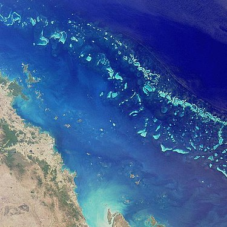

Големият Барирен Риф (Австралия)
Големият бариерен риф, разположен край източното крайбрежие на Австралия, е дом на разнообразие от акули.
Научи повече

Големият бариерен риф, разположен край източното крайбрежие на Австралия, е дом на разнообразие от акули.
Научи повечеБахамските острови в Карибско море са известни със своите чисти води и богата морска биология, което ги прави популярен регион за наблюдение на акули.
Научи повечеЮгоизточните крайбрежни води на Южна Африка са известни с голямото си биоразнообразие и са дом на много видове акули.
Научи повече